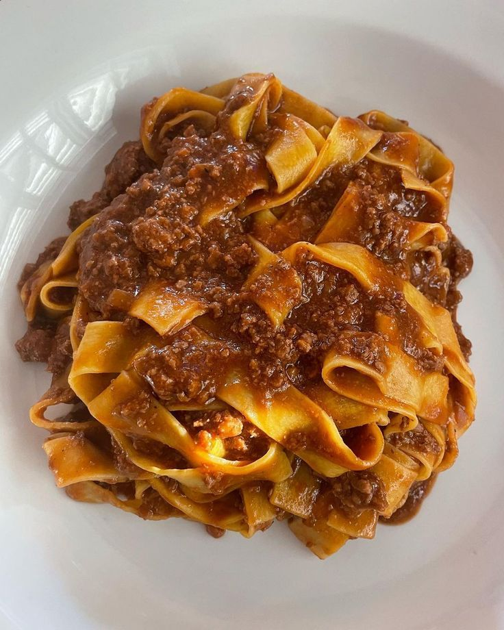

Tagliatelle Al Ragù
🍝 Tagliatelle al Ragù — 4 personas
Ingredientes:
- 400 g de tagliatelle
- 300 g de carne picada de ternera
- 100 g de panceta
- 1 cebolla
- 1 zanahoria
- 1 rama de apio
- 400 g de tomate triturado
- 100 ml de vino tinto
- 200 ml de leche
- 250 ml de caldo de carne
- 2 cucharadas de aceite de oliva
- Sal y pimienta
- Parmesano rallado
